四川丰火传媒有限公司，总部位于成都，是一家专注于品牌全案营销、文旅IP打造与持续运营的全案媒体公司。年营业流水超1,500万元，团队深耕餐饮连锁、商业地产、文旅景区三大领域，具备从战略规划到落地执行的完整服务能力。我们不只是"做活动""做推广"，更擅长将一个地方的文化资源转化为可持续的市场化项目——让流量变留量，让打卡变口碑，让一次消费变长期产业。
▸ 服务领域覆盖：
▸ 部分合作品牌 / 项目：
🤝 可导入品牌资源池（报恩寺项目招商备选）
以上餐饮品牌均为丰火传媒战略性合作伙伴，具备全国连锁运营能力，可作为报恩寺文旅街区首批入驻品牌。其中大院河·仙鱼莊、蜀镇老火锅、享月汤皇均为全球化布局的连锁餐饮企业，享月汤皇已进军新加坡市场；京祥和轩背后供应链更供应了北京绝大多数头部涮肉品牌（含故宫前门南门涮肉）。这些品牌的引入将直接提升街区商业品质与游客消费体验。
▸ 核心媒体运营体系：全案覆盖 · 自有团队 · 端到端交付
两个已落地的全案案例——一个证明我们能做大型文旅目的地的全国性推广，一个证明我们懂政府项目的政企协同模式。报恩寺项目正好需要这两种能力的叠加。
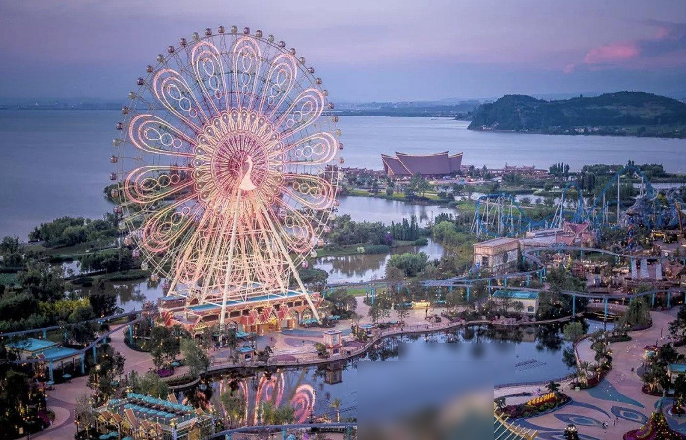
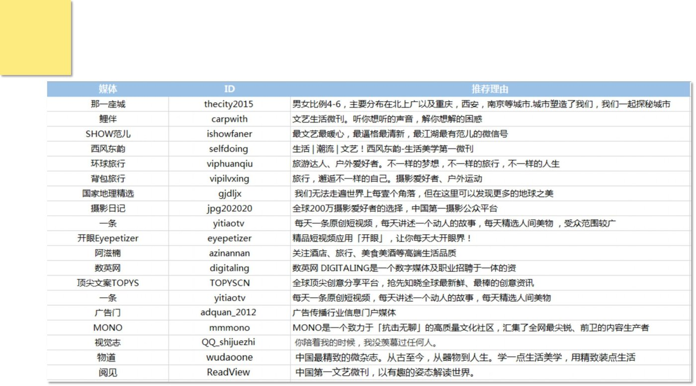
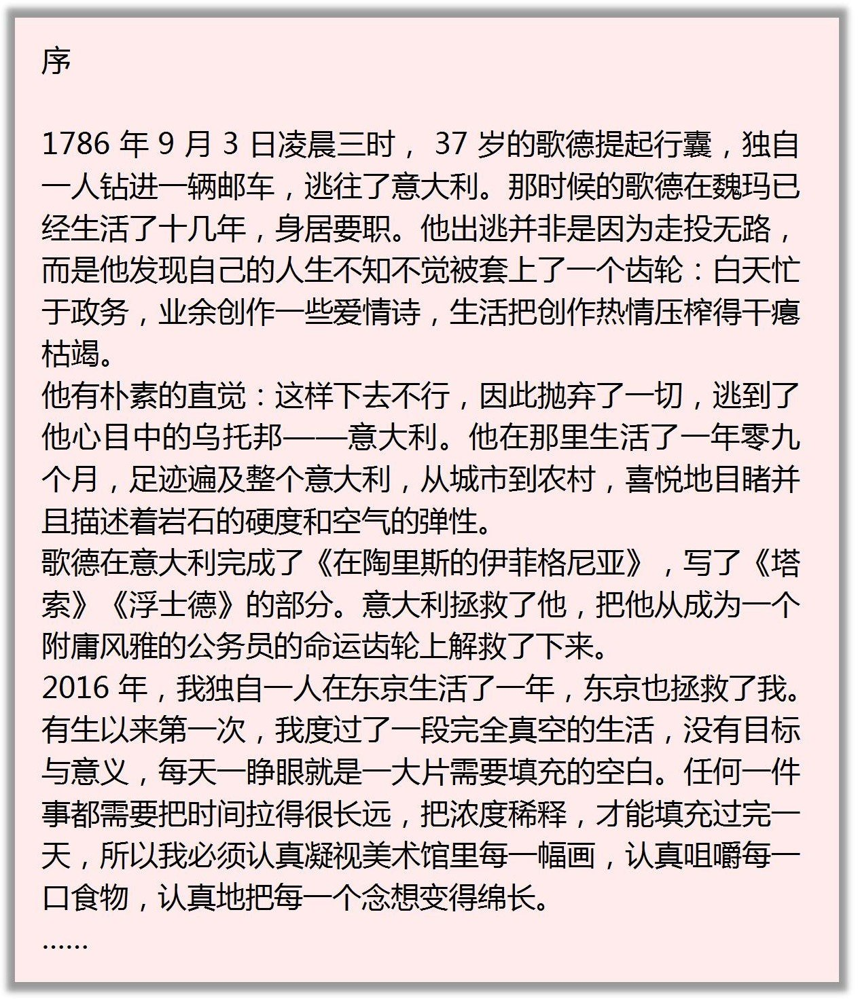
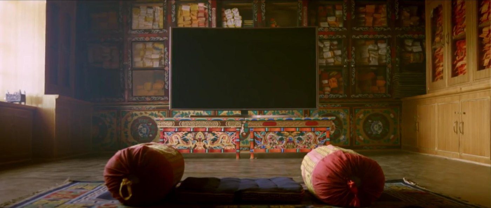
古滇名城位于云南昆明晋宁区，是昆明市政府重点打造的千亿级文化旅游综合项目。但面临一个根本性困境：外地人不知道它。昆明游客直奔大理丽江——没人会为一个"没听过名字的新盘"专门绕路。
我们的任务：让一个地域性项目变成全国人民都想去的目的地。
不卖"房子"，卖生活方式
"因为古滇名城才来云南"
20+核心城市设代理商
全国同步发声，非单点作战
10余平台运营 + KOL矩阵
Campaign战役式大事件引爆
非一次性投放
可持续网推体系
城市代理网络覆盖
KOL/达人矩阵传播
平台内容矩阵运营
古滇名城的底层逻辑完全可以迁移：九绵高速通车 = 古滇名城的"全国通路"。报恩寺同样需要重新定义品牌身份、搭建多平台内容矩阵、策划标志性事件引爆关注、构建可持续运营体系。区别在于，报恩寺有《黑神话》和董宇辉打下的认知基础，起点比当年的古滇名城更高。
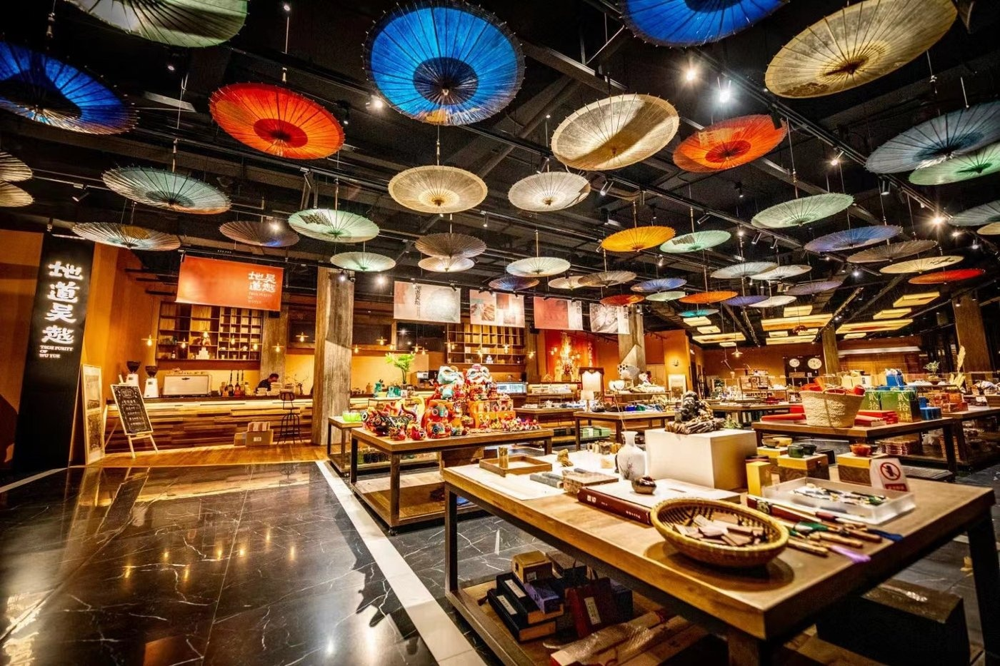
吉林省四平市铁东区政府希望建设一座非遗主题展示馆。现实情况是：全市各县区的非遗项目和农特产品分散在各处，没有统一的品牌形象、没有标准化的产品包装、没有有效的销售渠道。
更关键的是：建好了谁来管？谁来做运营？怎么保证不死掉？
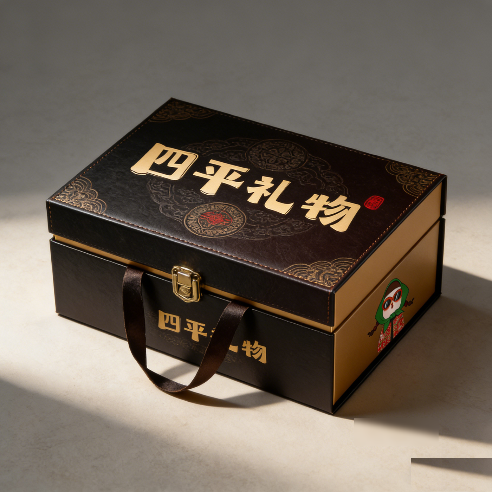
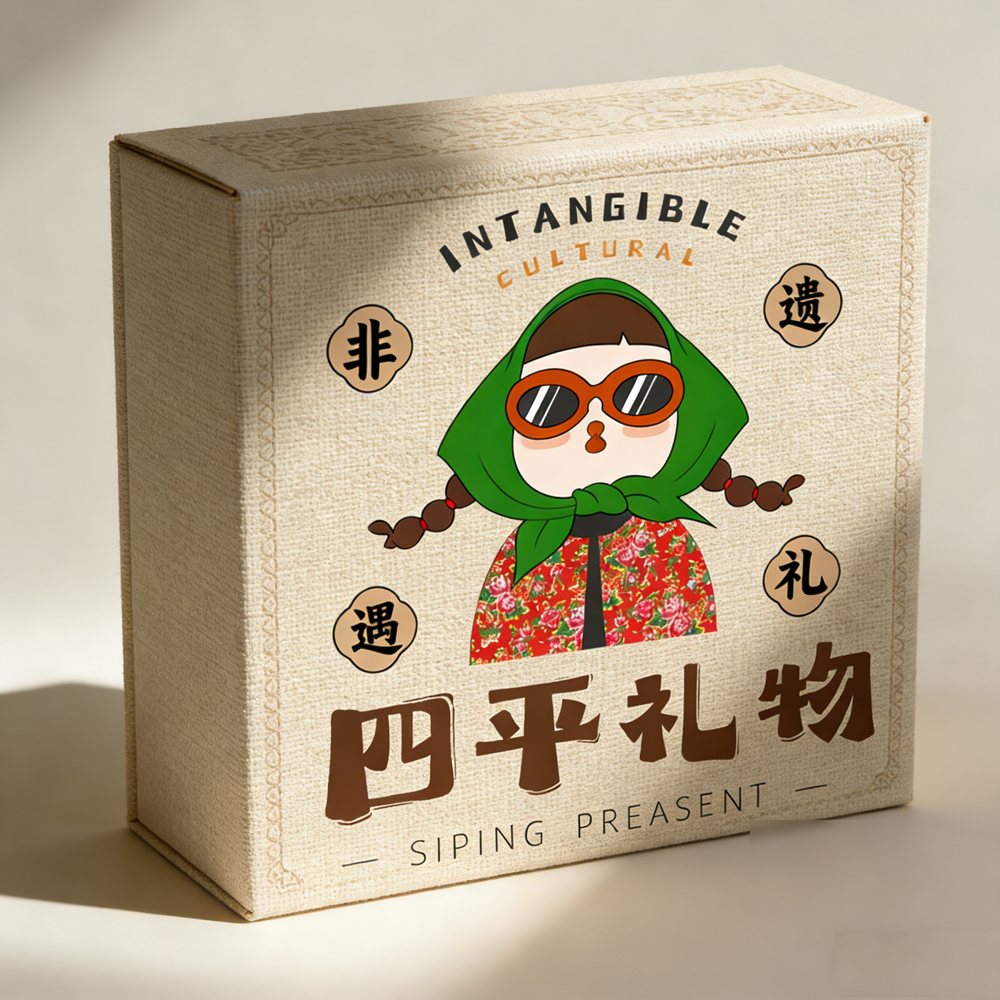
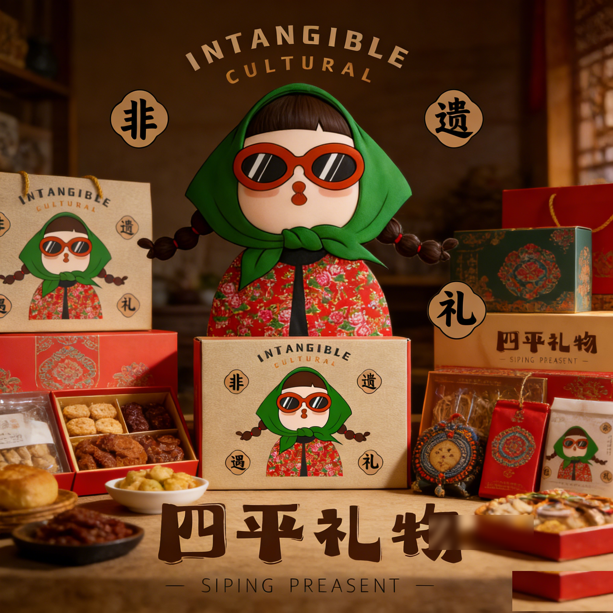
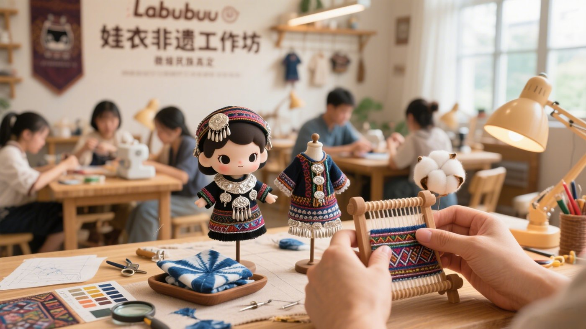
从"展馆"到"
城市文创空间"
非遗(故事内核)
→ 农特(供应链)
→ 文创(利润空间)
吸引→体验→
转化→复购
四段式闭环
五大获客通道
景区·酒店·旅行社
工会·线上
政府引导
+ 企业运作
= 利益共享
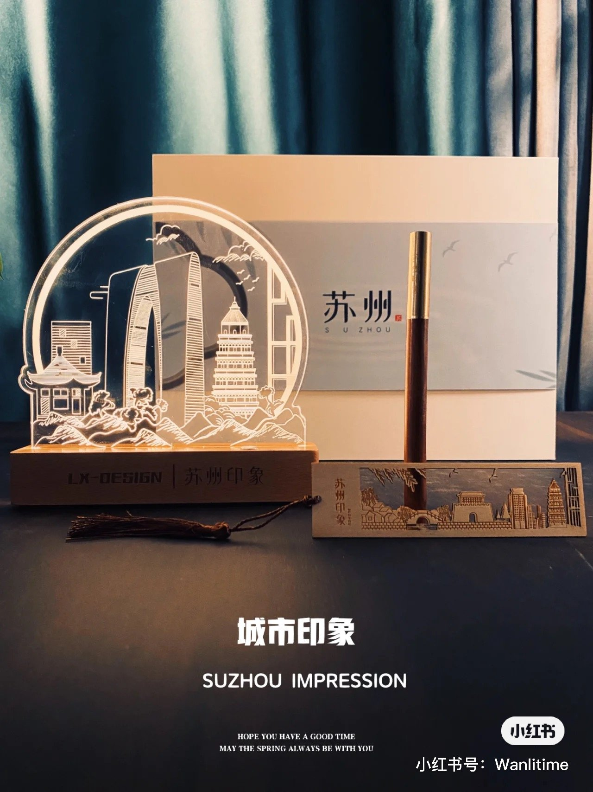
不按传统"博物馆"设计，定义为"城市非遗文创集合空间"——让每个走进来的人都能带走一件代表四平的东西。完整投入产出测算（建设成本、运营成本、预期收入、盈亏平衡点、三年财务预测），政府出场地和政策支持，专业团队负责日常运营，收益按约定比例分配——从建完就死到自我造血。
非遗展示馆的核心方法论对报恩寺项目高度适配：
• 报恩寺同样需要从"景点"转型为"可消费的文化空间"——不只是看建筑，还要能买、能吃、能玩
• 同样需要三层产品结构：建筑观光（基础层）+ 文创零售（变现层）+ 沉浸体验（溢价层）
• 同样需要解决"建了怎么活"的问题——我们的答案是一套完整的商业闭环设计和可持续运营模式
• 同样适用于政企协同的场景——政府出资源和政策，丰火出内容和运营能力，风险共担、利益共享
平武报恩寺不是一座普通的古庙。它是中国现存规模最大、保存最完整的明代古建筑群之一，被誉为"深山故宫"。2024年《黑神话：悟空》取景后爆火出圈，董宇辉"与辉同行"栏目实地探访，已具备全国级认知基础。
报恩寺全景 · 深山故宫
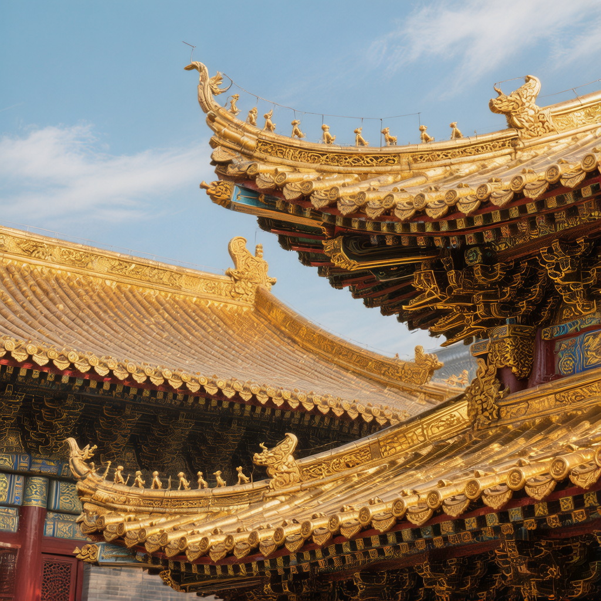
始建于明正统五年（1440年），历时近80年完工，1996年列为全国重点文保单位，2007年获评国家AAAA级景区。
① 全楠木金丝结构 ② 36种斗拱（比故宫还多）③ 整木千手观音像 ④ 明代转轮经藏 ⑤ 万龙奇观9999条龙 ⑥ 450㎡明代彩绘壁画
沿300米中轴线递次升高，完全仿北京故宫形制布局，气势恢宏。背依箭楼山，三面临江，风水格局得天独厚。
九绵高速全线通车，成都至平武车程从7小时缩短至3小时以内，深度融入"成都3小时旅游圈"。这是平武文旅发展的历史性转折点——外部流量通道已打通，关键在于如何让游客"进得来、留得住、带得走"。
核心战略：打造"秘境平武·熊猫家园"城市品牌
以报恩寺为文化核心，联动王朗自然保护区（大熊猫栖息地）、白马藏族民俗（国家级非遗"跳曹盖"）、老河沟生态等核心点位，构建"人文+生态+民族"三位一体的全域旅游格局。将九绵高速带来的过路客流转化为在平武深度停留的"留量"——住一晚、吃一顿、买一件文创、讲一个平武故事。
文化引擎 · 深山故宫
熊猫家园 · 国际级IP
跳曹盖非遗 · 民族风情
生态教育 · 森林康养
联动逻辑：报恩寺吸引首次到访 → 王朗+白马延长停留 → 老河沟承接研学客群 → 多日游闭环 = 真正实现"流量变留量"
📊 九绵高速效应
原车程时间
现车程时间
时间缩减
报恩寺与九寨沟同属川西黄金旅游带。九寨沟所在的阿坝州是川西核心区域，而平武报恩寺恰好位于成都—九寨沟的必经之路上，是通往九寨沟的"文化门户"。将报恩寺纳入行程，不仅不绕路，反而让整个旅程更有厚度——先看580年的深山故宫，再看世界自然遗产，一次旅行两种极致体验。
上午从成都出发（或绵阳中转），经京昆高速转九绵高速，约3.5~5小时车程抵达平武县。中午在县城品尝当地特色美食（荞麦面、腊肉、山珍），下午参观报恩寺（建议游览1.5~2小时）。傍晚继续沿九绵高速北上，当晚入住九寨沟沟口酒店。
建议早7点入园，按"Y字形"经典路线游览：日则沟（五花海、珍珠滩、诺日朗瀑布）→ 则查洼沟（长海、五彩池）→ 树正沟（树正群海、犀牛海）。全天约需6~8小时。晚上可观看《九寨千古情》演出。
九寨沟 → 平武 → 绵阳 → 成都。返程时可再次顺路经过平武，购买本地特产（高山蜂蜜、野生菌、花椒）。全程约5~6小时。
九寨沟 → 黄龙 → 松潘古城 → 茂县 → 成都。途经黄龙风景区（钙化彩池奇观）、松潘古城（千年边陲重镇）、茂县羌族风情体验。形成完整的"东进西出"川西大环线。
总里程：去程约450km | 大环线约750km
最佳季节：4月~11月 | 路况：全程高速+国道，轿车可通行
报恩寺不可错过的五大看点
金丝楠木全木结构 — 中国现存最完整的明代楠木建筑群
转轮经藏 — 明代精密机械杰作，至今可转动
千手观音像 — 一根整楠木雕刻而成
9999条龙 — 万龙壁、龙柱、龙纹，形态各异
明代彩绘壁画 — 450㎡宫廷级艺术珍品
为什么一定要来报恩寺？
它是你从成都到九寨沟路上的"最佳中途站"——不绕路、不赶路，正好在半路歇脚。花1~2小时看完这座"深山故宫"，等于免费解锁了一个国家AAAA级景区+全国重点文保单位。
带着孩子来的话，这里比九寨沟更安静，更适合做一场沉浸式的建筑美学启蒙。
借鉴故宫文创成功经验，围绕报恩寺"大明美学""金丝楠木""万龙奇观"三大IP元素，开发高颜值、强传播力的系列文创产品：
设计概念：复刻报恩寺华严殿屋顶轮廓与万佛阁飞檐造型，推出"深山故宫"主题3D造型雪糕。
口味方向：川味花椒巧克力、熊猫竹叶抹茶、藏红花拿铁——融合平武本地特色。
传播逻辑：手持雪糕与真建筑合影 = 天然社交媒体内容。参考故宫脊兽雪糕单月百万支销量。
设计概念：以报恩寺独有的金丝楠木为灵感来源，扇面印制9999条龙纹样精选图案、明代彩绘壁画局部、斗拱结构线描图。
档次分层：入门款（竹骨印刷扇面，¥68-128）→ 收藏款（楠木贴片扇骨+手工绘画，¥388-888）→ 礼品定制款（企业/政务伴手礼，¥1288+）。
文化附加值：每把折扇附带二维码，扫码可听"一根楠木的故事"音频导览，将产品转化为文化传播载体。
设计概念：取材报恩寺"万龙奇观"9999条龙的意象，设计精美雕刻木质许愿牌，游客可书写心愿悬挂于指定区域。
体验闭环：购买祈福牌 → 书写愿望 → 亲自悬挂 → 拍照分享 → 年度"万龙灯会"统一点亮仪式。让一次购买变成持续的情感联结。
收益潜力：参照同类景区数据，单价¥29-99，日均销量200-500块，年收入可达百万级别。
设计概念：将报恩寺"六绝"（楠木结构、斗拱、千手观音、转轮经藏、万龙奇观、彩绘壁画）分别设计为Q版手办/徽章/冰箱贴，以盲盒形式发售。
稀缺性设计：每套设1个隐藏款——"报恩寺全貌"限定金色版，激发收集欲和二次传播。
渠道策略：线下景区首发 + 线上抖音小店/小红书商城同步销售 + 节庆限量联名款（如春节特别版），形成持续销售节奏。
设计概念：面向中小学生群体，开发"古建筑科普+动手体验"一体化研学产品包。
套装内容：斗拱拼装模型（榫卯结构真实还原）、报恩寺寻宝任务卡、金丝楠木标本小样、"我心中的大明宫殿"绘画本、研学证书。
市场空间：对接成都及周边城市学校春秋游市场、亲子家庭周末游，客单价¥168-298，预计年接待量可达3-5万人次。
"深山故宫 · 大明美学圣地"
五大能力环环相扣，围绕中心持续运转，确保项目长期活力。
报恩寺拥有580年的厚重积淀，拥有"深山故宫"的顶级禀赋。
九绵高速通车——成都3小时直达，流量通道历史性打通。
《黑神话》点燃全民关注，"秘境平武·熊猫家园"品牌蓄势待发。
资金到位、时机成熟、万事俱备。
所差的，是一个能让这份宝藏真正"活起来""火起来""留下来"的专业团队。
丰火传媒愿做这个"点火的人"。